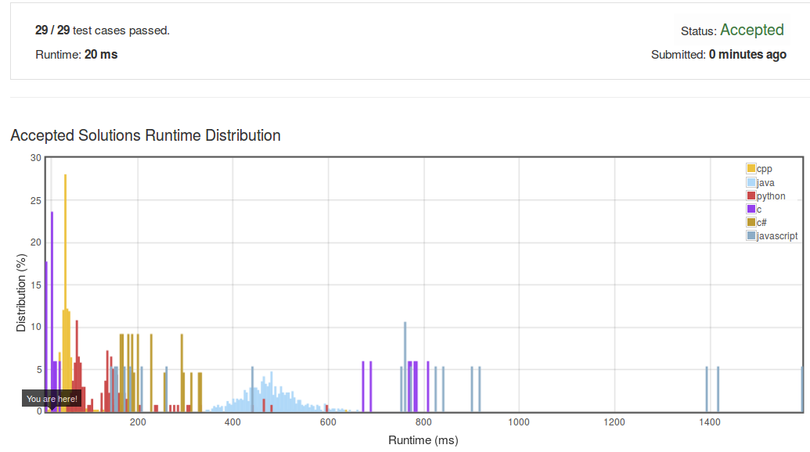

Given an array of integers, find out whether there are two distinct indices i and j in the array such that the difference between nums[i] and nums[j] is at most t and the difference between i and j is at most k.
Here is my solution but I use a pair to store the value and its position. Try to find
a data structure lighter in memory. I have seen an elegant solution on the web when
comparing with mine.
hint: values are stored in a contiguous way in the main memory ;)
bool containsNearbyAlmostDuplicate(vector<int>& nums, int k, int t) {
if(k==0) return false;
vector< pair<int, int> > vp(nums.size());
for(int i = 0; i < nums.size(); i++)
{
vp[i].first = nums[i];
vp[i].second = i;
}
std::sort(vp.begin(), vp.end(), [&](const pair<int, int>& a, const pair<int, int>& b)->bool{
return a.first < b.first;
});
for(int i = 0; i < nums.size(); i++)
{
for(int j = i+1; j <nums.size(); j++)
{
if(vp[j].first > vp[i].first + t)
break;
if(abs(vp[j].second - vp[i].second) <= k)
return true;
}
}
return false;
}
